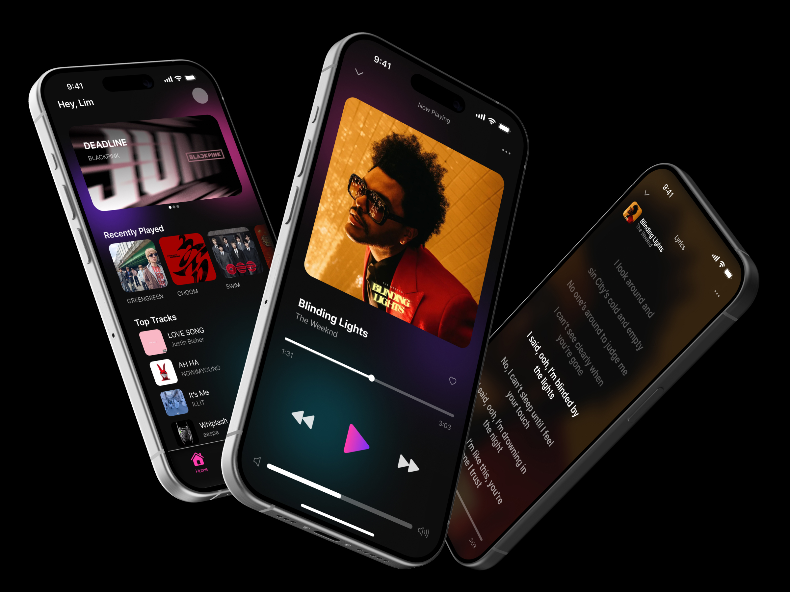
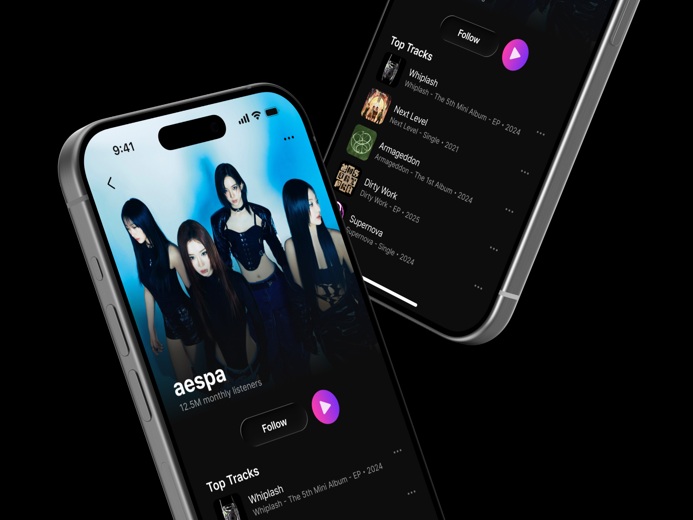
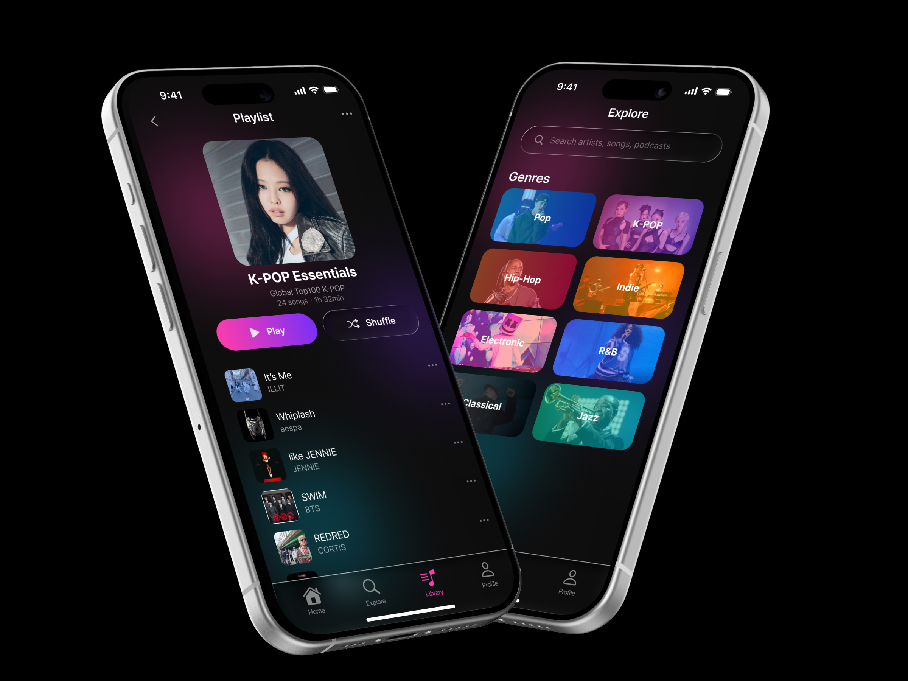

UI/UX Design
RIFF는 음악 취향 기반의 소셜 기능을 갖춘 스트리밍 앱 UI/UX 디자인 프로젝트입니다.
단순한 음악 재생을 넘어, 청취 기록과 취향 데이터를 시각화해 친구와 공유하는 경험에 초점을 맞췄습니다. 어두운 다크 모드 기반의 인터페이스에 앨범 컬러를 동적으로 반영하는 배경 처리를 핵심 비주얼로 구현했습니다.



Spotify, Apple Music 등 음악 앱 경쟁사 분석. 소셜 공유 기능의 부재와 취향 시각화 니즈를 발견했습니다.
청취 기록 공유 플로우 설계. 음악을 중심으로 친구와 연결되는 소셜 경험의 핵심 경로를 정의했습니다.
다크 모드 기반 UI 시스템 구축. 음악 감상 집중도를 높이는 어두운 인터페이스와 컬러 포인트를 설계했습니다.
앨범 커버 컬러를 동적으로 반영하는 배경 처리 설계. 재생 중인 음악에 따라 UI가 반응하는 핵심 비주얼을 완성했습니다.